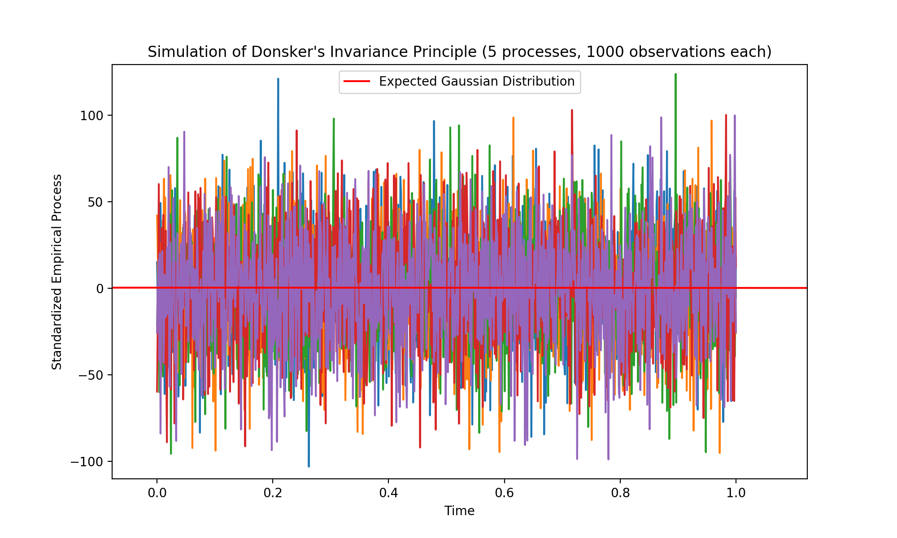

Abstract: Donsker’s Invariance Principle is a powerful concept in probability theory that extends the classical Central Limit Theorem (CLT) to the functional setting, specifically addressing empirical processes. This paper aims to provide a thorough exploration of Donsker’s Invariance Principle, offering a detailed proof and accompanying code simulations to enhance understanding and demonstrate practical applications.
The classical CLT is a fundamental result characterizing the asymptotic behavior of the sum or average of independent and identically distributed random variables. Donsker’s Invariance Principle builds upon this, extending the CLT to empirical processes observed in function spaces. This paper delves into the theoretical foundations and implications of Donsker’s Invariance Principle.
To understand Donsker's Invariance Principle, it's essential to grasp the concept of empirical processes.
An empirical process is a sequence of random variables that represents the cumulative distribution function
(CDF) of a sample. These processes play a crucial role in statistical theory, enabling the study of
convergence properties and asymptotic behavior.
Donsker's Invariance Principle is often formulated in the context of the Skorokhod space, a mathematical
framework for dealing with stochastic processes that have cadlag (right-continuous with left limits) sample
paths. This space is chosen due to its ability to accommodate a wide range of processes encountered in
probability theory and statistics.
Donsker's Invariance Principle can be stated as follows:
Let \(X_1,X_2,...\) e a sequence of independent and identically distributed (i.i.d.) andom variables with
cumulative distribution function \(F\), and let \(F_n\) be the empirical distribution function based on the
first \(n\) observations. Then, the process \(\sqrt{n}(F_n -F) \) converges in distribution to a standard
Brownian bridge as \(n\) approaches infinity.
In simpler terms, Donsker's Invariance Principle asserts that the standardized empirical process converges
to a standard Brownian bridge as the sample size grows indefinitely.
The proof of Donsker’s invariance principle involves demonstrating tightness and weak convergence. Here’s a
high-level outline of the proof:
To complement the theoretical exposition, this paper provides detailed code simulations using Python
programming language. The simulation methodology involves generating empirical processes, applying Donsker’s
Invariance Principle, and comparing the simulated results with the expected Gaussian distribution.
Pyhton code available here!

Donsker's Invariance Principle is a powerful tool that extends the classical CLT to the functional setting. Its implications are far-reaching, impacting fields where empirical processes play a vital role. The principle provides a bridge between probability theory and statistics, enabling a deeper understanding of the behavior of stochastic processes in function spaces.